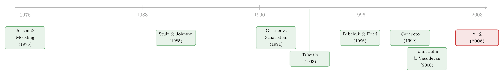

给濒死的公司放贷，是助纣为虐，还是雪中送炭？
本文读的是 Dahiya, John, Puri & Ramírez (2003, JFE)：他们用 1988–1997 年间 538 家申请破产保护的公司，第一次大样本地检验了「债务人持有融资 (debtor-in-possession financing, DIP financing)」的后果——拿到 DIP 融资的公司更可能走出破产、也更快走完破产程序（不管是重生还是清算），而当这笔钱来自老债主时，进出得更快。证据更像「筛选 + 监督」，而不是批评者担心的「过度投资」。
1 一个反直觉的金融产品
先想一个看上去违反常识的问题：一家公司已经申请破产了，资不抵债，前途未卜——谁还敢借钱给它？
按教科书的逻辑，没人会。一笔追加贷款，本金随时可能跟着公司一起灰飞烟灭，而它能换来的回报又封顶在合同利率。理性的债主应该掉头就走。可现实里，恰恰有这样一类贷款，专门借给已经趴在破产法庭门口的公司——这就是美国破产法 (US Bankruptcy Code) 里独有的 DIP 融资。
它之所以能存在，靠的是法律硬塞给它的一个「特权」。申请破产保护（俗称走 Chapter 11）的公司被称为「债务人持有」(debtor-in-possession)，因为原管理层通常仍握着经营权。破产法第 364 条 (Section 364) 规定：破产之后才发放的这笔新贷款，可以获得超级优先权 (superpriority) 和增强的担保——它的清偿顺位排在几乎所有旧债权人之前，甚至可以在已经抵押过的资产上再设一道「优先留置权」(priming lien)。更关键的是，公司想从 Chapter 11 里走出来，必须先把 DIP 贷款全额还清。法律等于给这笔钱发了一张「插队卡」。
于是争论就来了。
批评者说，这张插队卡是个祸害。既然新债主旱涝保收，原本应该破产清算的公司就有了继续「赌一把」的本钱——管理层会去上那些净现值 (net present value, NPV) 为负、但赌赢了能翻身的高风险项目，这就是经典的过度投资 (overinvestment) 问题，本质上是 Jensen & Meckling (1976) 笔下的风险转移。更糟的是，Bebchuk & Fried (1996) 和 Warren (1996) 指出，把资产抵押给新的有担保债主，等于把财富从原来的无担保债权人手里转移给了新债主——尤其当公司已经陷入困境时，这种转移更赤裸。Triantis (1993) 专门写过一篇文章，论证 DIP 融资如何制造出过度投资的激励。
赞成者则反过来说：正是因为有了这张插队卡，公司才借得到钱去做那些本该做、却因为缺钱被迫放弃的正 NPV 项目。Stulz & Johnson (1985) 和 Schwartz (1997) 强调的就是有担保融资的这一面——没有优先权和担保，好项目也会被错过。
两边说得都有道理。可这场从 1990 年代起就在法学和经济学界吵得不可开交的争论，有一个尴尬的共同点：几乎全是理论。DIP 融资从 1978 年破产改革法案起就存在，到 1990 年代初那波破产潮里才真正做大，但一直没人拿大样本数据正经检验过它到底干了什么。
这篇论文要做的，就是把这场口水仗拉到数据面前。
2 三个可以被数据回答的问题
作者把争论拆成了三个干净、可检验的问题：
第一，什么样的公司能拿到 DIP 融资？ 如果 DIP 融资真像批评者说的那样助长烂赌，我们应该看到它系统性地流向那些最该清算的烂公司。
第二，DIP 融资和破产「结局」与「速度」是什么关系？ 这里有两个维度：拿到钱的公司更可能重生（走出 Chapter 11）还是更可能清算？以及，它在破产程序里待的时间是变长了还是变短了？
这第二个问题尤其要紧，因为它能区分两种截然不同的机制。设想一下：
- 如果 DIP 融资只是在做筛选 (screening)——也就是说，DIP 债主像一个聪明的体检医生，只把钱借给那些本来就「底子好、能很快康复」的公司——那我们会看到拿钱的公司更快重生，但不该看到它们更快清算。
- 但如果 DIP 债主还在做监督 (monitoring)——也就是说，他们盯着公司，事情顺利就帮它快点出来，事情不妙就当机立断拉去清算、抢救残值——那我们应该看到一个反直觉的现象：清算也变快了。
换句话说，「清算速度」是这篇论文藏起来的一把手术刀。批评者的过度投资故事预测的恰恰相反——有了源源不断的输血，烂公司应该拖更久才咽气。
第三，借钱的人是谁，重要吗？ 这是全文最精巧的一刀。给破产公司放 DIP 贷款的，可能是个跟它毫无瓜葛的新债主（outsider），也可能是早就有贷款挂在它账上的老债主（insider）。老债主有两样东西新债主没有：一是对借款人未来前景的私有信息（这正是 Diamond (1984)、James (1987)、Petersen & Rajan (1994) 一脉关系型贷款文献的核心），二是想保住自己那笔旧债的额外动机。这两样东西会怎样改变破产的结局和速度？
把第三个问题翻译成大白话：如果你既是这家公司的老债主、又来放新的救命钱，你比谁都清楚它到底还有没有救——而且你比谁都急着把这事了结，因为你的旧账还压在里头。
3 数据：把 538 家破产公司一个个翻出来
要回答这些问题，作者得先攒出一个前人没有的样本，这本身是篇论文里最费力气的活儿。
他们从 New Generation Research 的 Bankruptcy DataSource 出发，捞出 1988 年 1 月到 1997 年 12 月间所有申请 Chapter 11 的公司，共 685 例（同一家公司多次申请算多例）。剔除金融类公司（SIC 码 6000–6999）和六起石棉、硅胶植入物诉讼引发的破产后，剩下 538 家非金融公司——这就是分析的母体。
接着是更难的一步：判断这 538 家里，到底哪些真的拿到了 DIP 融资。作者用了两道工序。先查 Loan Pricing Corporation 的 Dealscan 数据库——它收录了 1986 年以来五万多笔企业贷款，里头有一个预设字段就叫「Debtor-in-Possession」。靠这个字段，先得到 107 家公司的 166 笔 DIP 贷款（贷款数多于公司数，因为一家公司可能有多笔、或中途展期）。但 Dealscan 并不全，于是作者又去 Dow Jones News Retrieval 和 Lexis-Nexis 的商业新闻里，逐家公司、用「DIP financing」「post-petition financing」等关键词搜，既核实 Dealscan、又补漏。最终确认 165 家公司拿到了 DIP 融资，剩下 373 家没有。
财务数据取自破产申请前的最后一个财年，主要来自 Compustat，缺的部分用 Bankruptcy DataSource、Disclosure 和 10-K 补。破产「结束」的日期，用法院确认重整方案 (plan confirmation) 之日；对那些没有正式确认日、靠零敲碎打卖资产或被整体收购了结的公司（多数是非 DIP 公司），则用法院批准重大资产出售或收购之日。
光是这个数据集的描述性事实就很有意思。整个样本期里，30.67% 的破产公司拿到了 DIP 融资；但这个比例不是恒定的——样本前半段（1988–1992）不到 20%，后半段（1993–1997）升到 30% 以上，1995、1996 年甚至接近 48%。这印证了 DIP 市场在 1990 年代的快速崛起，也提醒作者：检验时必须控制这种时间趋势（后面那个 POST1992 哑变量就是干这个的）。另外，超过 60% 的公司在申请破产后 30 天内就拿到了 DIP 融资——这笔钱是急救，不是慢郎中。
而在 154 家能同时查到 DIP 债主和破产前债主身份的公司里，89 家（58%）的 DIP 贷款来自它们原来的老债主。老债主放贷，是常态而非例外。这正是第三个问题的根基。
4 第一刀：谁拿到了钱？
先看单变量比较。作者把 538 家公司按拿没拿到 DIP 融资分成两组，比均值和中位数。结论相当干净：
- 总资产：拿到 DIP 的公司平均
638.85百万美元，没拿到的只有150.68百万——差异的 t 值高达8.11，中位数检验同样在 1% 水平显著。 - 杠杆（负债/资产）：拿到 DIP 的公司更低（
0.834vs.0.952），t 值-2.12，5% 显著。 - 流动资产占比（流动资产/总资产）：拿到 DIP 的公司略高（
0.511vs.0.476），但不显著。
单变量只是开胃菜。作者真正依靠的是一个 Probit 模型：
$$ DIP_i = f\big(LOGASSET_i,\ LEVERAGE_i,\ PREPAK_i,\ POST1992_i,\ RETAIL_i,\ CA/TA_i\big) $$
其中被解释变量 \(DIP_i\) 在公司 \(i\) 拿到 DIP 融资时取 1，否则取 0；\(LOGASSET\) 是申请破产前最后一年总资产账面值的自然对数（代理公司规模、也代理可抵押资产的多少），\(LEVERAGE\) 是（长期债务 + 流动负债）/ 总资产，\(PREPAK\) 标记预重整破产 (prepackaged bankruptcy)，\(POST1992\) 控制 DIP 市场的历史增长，\(RETAIL\) 标记零售业（SIC 5200–5999），\(CA/TA\) 是流动资产占比。
这里有个细节值得停一下：作者把杠杆定义成「长期债务 + 流动负债」而非单纯的长期债务/总资产。原因是 Compustat 在某些违约情形下会把长期债务记为零、转记入流动负债，这个定义能对冲掉这种记账偏差。是个老实的处理。
Probit 的结果支持单变量的故事：规模越大，越能拿到 DIP 融资；零售业的公司也更容易拿到。这两点都符合直觉——DIP 债主要的是抵押品，大公司家底厚；而零售业（想想当年的 Macy's、Federated、Ames）现金流密集、流动资产可做抵押，又特别需要靠「持续供货」来安抚供应商和顾客，对 DIP 融资天然有需求。预重整破产 \(PREPAK\) 则因为本身停留时间短，不太需要 DIP 融资。
到这里，第一个问题有了答案：DIP 融资并没有系统性地流向最烂的公司，反而流向了规模更大、杠杆更低的那一批。这第一拳，已经先打在了「过度投资」假说的下巴上——如果 DIP 融资是在助长烂赌，它不该挑大公司、低杠杆公司下手。
5 真正关键的一步：把「清算」也加快了
但真正把这篇论文从「描述性」推向「有洞见」的，是第二个问题。
作者发现：拿到 DIP 融资的公司更可能走出 Chapter 11（emerge），而不是清算消失。这一点本身可以被「筛选」解释——DIP 债主挑了好苗子。
然后反转出现了。
作者进一步看破产程序的时长，发现拿到 DIP 融资的公司更快了结破产——而且不只是更快重生，清算也更快。
请回到第 2 节那把手术刀。如果 DIP 债主只是个会挑苗子的体检医生（纯筛选），他没理由让清算也加速；让清算加速的，只能是一个会主动盯盘、当断则断的监督者。这就把天平从「纯筛选」推向了「筛选 + 监督」：DIP 债主先把钱投给有正 NPV 项目的公司、帮它们尽快重生；可一旦发现苗头不对，他们会迅速拉去清算，抢在资产进一步缩水前保住残值。
这恰恰是「过度投资」故事的反面。批评者预言：有了不断的输血，该死的公司会拖着不死。数据说的却是：拿到 DIP 融资的公司，死也死得更利索。
（关于「该不该让濒死资产快点了结、还是按着不卖」的张力，可参见《止赎来的那栋楼，银行为什么按着不卖？》——那篇讲的是另一种「战略性拖延」与「火线甩卖」之间的权衡。）
6 最精巧的一刀：老债主的私心，反而是好事
最后是那把最锋利的刀——债主的身份。
作者把 DIP 债主分成两类：有旧账在身的老债主（insider）和素昧平生的新债主（outsider）。两个发现：
其一，老债主更愿意给小公司放 DIP 贷款。 这很关键——还记得 Probit 里规模越大越容易拿到 DIP 融资吗？把小公司从「拿不到钱」里救出来的，往往正是它们的老债主。为什么？因为老债主手里有外人没有的私有信息，他敢借给那些账面上看不出名堂、但他「心里有数」的小公司。这正是关系型贷款的信息优势在破产场景里的体现。
其二，老债主提供的 DIP 融资，对应着更快的破产了结——无论重生还是清算。 老债主进出都比新债主更快、更狠。
作者给的解释干净有力：老债主在这家公司身上押的，远不止那笔 DIP 贷款本身。他还有旧账要收。这双重的利害关系，加上信息优势，给了他一个比谁都强的动机——把 Chapter 11 这件事，不管以哪种方式，尽快了结。事情能成，就帮它快点重生（旧债跟着得救）；事情不成，就快点清算（趁早拿回点旧债）。
（老债主「既有信息、又有动机」继续介入困境借款人的逻辑，和《你把账户开在哪家银行，银行就比谁都先知道你要出事》里讲的监督优势是同一条暗线；而老债主借新债保旧债的微妙激励，又让人想起《欠你一千万的人，其实是债主的「人质」》——只不过这里的「续贷」是把事情加快了结，而非无限拖延。）
顺带一提，作者还报告了一个让「财富转移」担忧打折的事实：无论老债主还是新债主，DIP 贷款额占总资产的比例都不高——老债主约 20.11%，新债主约 20.60%，两者几乎一样。如果 DIP 融资真是老债主用来把财富从无担保债权人手里搬给自己的工具，我们大概会看到老债主放出格外大的贷款，事实并非如此。
7 文献脉络
把这篇论文放回它生长的那条藤上，会看得更清楚。
最上游是 Jensen & Meckling (1976) 关于风险转移与代理成本的奠基之作——它给了「过度投资」担忧最原始的理论引擎。沿着有担保债务这条线，Stulz & Johnson (1985) 论证了优先与担保融资的好处（让好项目不被错过），构成了 DIP 融资「正面」叙事的源头。
进入 1990 年代，争论白热化。一边，Gertner & Scharfstein (1991) 建模了破产法如何扭曲投资激励，Triantis (1993) 专门论证 DIP 融资制造过度投资，Bebchuk & Fried (1996) 与 Warren (1996) 从「有担保债权优先到底该不该」的角度抨击它会损害无担保债权人；另一边，Schwartz (1997) 写下《有担保债权优先的简单理由》予以回击。Bradley & Rosenzweig (1992) 干脆质疑整个 Chapter 11 制度是否站得住脚。与此同时，Gilson (1990) 和 Gilson, John & Lang (1990) 用实证记录了银行债主在重整中的活跃角色，为「信息/监督」一脉埋下伏笔；Tashijian, Lease & McConnell (1996) 则把预重整破产讲透，这正是本文 \(PREPAK\) 变量的来历。

最贴近本文的，是三篇专攻 DIP 的工作：Carapeto (1999) 研究 DIP 融资对回收率的影响，Chatterjee, Dhillon & Ramírez (1997) 发现 DIP 融资公告会带来股、债的正超额收益（暗示它释放了正面信息），而 John, John & Vasudevan (2000) 给出了 DIP 融资具有「筛选效应」的理论模型，并预言公告会带来正向价格反应。本文站的位置很明确：在这些理论与小样本/事件研究之上，第一次用大样本、把「结局 × 速度 × 债主身份」三维一起检验，给「筛选 + 监督」假说提供了系统的实证证据。
8 评论与延伸（Q&A + 研究方向）
(a) 几个可能的疑问
Q：「清算也更快」凭什么就能否定过度投资假说？会不会只是大公司本来就办事快？
不能完全排除，但作者用 Probit/久期分析控制了规模、杠杆、行业、时间趋势等变量后，DIP 的效应依然在。逻辑上，过度投资假说的核心预测是「输血让该死的公司拖着不死」，而数据是「死得更快」——方向就反了。规模能解释「为什么大公司拿到钱」，却解释不了「为什么拿到钱的公司清算反而提速」。
Q：只统计了能查到「结束日期」的公司，会不会有幸存者偏差？
这是真问题。作者明说有一部分公司（多为非 DIP）找不到正式确认日，只能用资产出售/收购批准日近似，还有少数连结束日都定位不到。如果非 DIP 公司更容易「人间蒸发」而不留结束记录，时长比较就可能有偏。作者的辩护是「对 DIP 与非 DIP 一视同仁地处理」，因而不太会系统性地偏向某一方——但这终究是个需要读者自行掂量的口径问题。（样本只收「死得不那么惨、留下了痕迹」的公司这一隐忧，《我们只统计了死得不那么惨的那些公司》讲得很透。）
Q：老债主放 DIP 贷款，会不会是内生的——他放贷恰恰因为他早知道这家公司能成？
正是问题的核心，也是这篇论文最该被挑战的地方。老债主的信息优势既是它的「卖点」（解释为什么进出更快），也是识别上的麻烦：我们看到的「老债主→更快了结」，到底是老债主导致了更快了结（监督），还是老债主挑了那些本来就会更快了结的公司（筛选）？这篇论文坦诚地把两种机制都归到「筛选 + 监督」名下，但没有一个外生冲击能把二者干净地掰开——这是它留给后人的缺口。
Q：DIP 融资带来的「正面信息」会不会才是真正起作用的东西，而非筛选或监督？
Chatterjee et al. (1997) 确实发现 DIP 公告有正的股债超额收益，John et al. (2000) 也预言了这一点。信息效应和监督效应在这里高度纠缠：老债主愿意放贷这个行为本身就是个信号。本文没有用事件研究去测公告效应，而是看实打实的结局与时长，算是和信息假说互补、而非竞争。
Q：把「确认重整方案之日」当作破产结束日，对清算型公司公平吗？
作者对没有正式确认日的清算型公司，改用「重大资产出售/收购获批之日」，并坦言：如果实际了结拖到了首次资产出售之后，这会低估真实时长。好在这种低估对 DIP 和非 DIP 公司是同方向的，所以更可能削弱、而非夸大组间差异——从这个角度看，发现的「DIP 更快」反而是个保守估计。
Q：这是 1988–1997 年的美国样本，今天还成立吗？
需要谨慎。2005 年破产法改革 (BAPCPA) 之后，DIP 市场的结构、规模、定价都变了很多（比如「展期到出售」式 DIP、loan-to-own 策略的兴起）。本文刻画的是 DIP 市场的「青春期」，结论的方向大概率仍在，但量级和机制的相对权重值得用新数据重估。
(b) 几个可能的研究问题与提案
1. 用债主身份做一次更干净的识别。 【经济故事】本文最大的软肋是「老债主→更快了结」的内生性。若能找到一个让老债主被迫退出或留任的外生冲击（比如银行自身陷入困境、被并购、或监管限制其对破产借款人放贷），就能把「监督」从「筛选」里剥出来。 【可行性】中。需要把 DIP 债主与其自身的财务/监管事件匹配，数据可从 Dealscan + 银行层面数据库拼出；难点在找到足够多、足够干净的冲击。
2. DIP 融资与公司债持有人的财富再分配。 【经济故事】批评者的核心担忧是 DIP 的超级优先权把财富从无担保债权人（尤其是公开债持有人）手里搬走。本文的贷款额占比证据只是间接反驳。直接的检验是：DIP 融资（尤其是带 priming lien 的）公告时，公司已发行债券的价格怎么动？ 【可行性】高。用 TRACE/历史债券价格 + DIP 公告日做事件研究，按是否 priming、是否老债主分组。这是把本文的「财富转移」之争搬到信用市场、用价格说话的直接路径。（priming lien 把抵押品从老债主手里「抢」走的张力，和《把抵押品从老债主手里抢过来，反而是件好事？》是同一类问题。）
3. 外资 / 机构债权人作为 DIP 债主。 【经济故事】今天的 DIP 市场里，对冲基金、私募信贷、外资机构早已是重要玩家，他们和传统银行老债主的信息结构、激励完全不同（loan-to-own 的动机可能让他们更倾向于推动清算或控制权转移）。债主类型如何改变破产结局，是个本文框架自然的延伸。 【可行性】中。需要细分 DIP 债主类型的数据（部分可从破产法庭文件、Reorg/PacerMonitor 抓取），识别上仍有内生性，但描述性事实本身就有价值。
4. 破产法庭的「拥堵」如何中介 DIP 的效果。 【经济故事】DIP 融资加快了了结，但「快」也取决于法庭本身的处理能力。如果法庭很忙，DIP 的提速作用会不会被吃掉？ 【可行性】中高。可借鉴《法官太忙，借钱就贵》的法庭工作量度量，与 DIP 融资交互，看提速效应在拥堵法庭里是否衰减。数据可得，识别用法庭层面的外生工作量波动。
我的判断
这篇论文的贡献，在于它把一场打了十几年的纯理论口水仗，第一次拽到了大样本数据面前，并且设计了一把漂亮的手术刀——用「清算速度」区分筛选与监督。「DIP 公司死得更快」这个反直觉的发现，比任何回归系数都更有说服力地反驳了过度投资假说，因为它的方向恰好与批评者的核心预测相反。债主身份那一刀（老债主进出更快、且偏爱小公司）则把关系型贷款的信息优势，干净地嵌进了破产这个极端场景里。
它的软肋也很清楚，且作者基本都老实承认了：一是识别——「老债主导致更快了结」与「老债主挑了会更快了结的公司」无法被现有设计分开，全文的因果语言其实更接近「一致于」(consistent with) 而非「证明」；二是结束日期口径带来的潜在偏差，虽然作者论证了它更可能是保守的；三是样本时代，1988–1997 的 DIP 市场和今天差异巨大。
我最想看到的后续，是有人用一个让 DIP 债主身份外生变化的冲击，把「监督」从「筛选」里真正剥出来；以及把这套分析搬到公司债持有人的价格反应上，正面回应那个始终悬而未决的「财富转移」之争。在那之前，这篇论文给出的，是一个有力但仍需更强识别去夯实的结论：给濒死的公司放贷，至少在这批数据里，更像雪中送炭，而非助纣为虐。
参考文献
Bebchuk, L., Fried, J. (1996). The uneasy case for the priority of secured claims in bankruptcy. Yale Law Journal 105, 857–891.
Bradley, M., Rosenzweig, M. (1992). The untenable case for Chapter 11. Yale Law Journal 101, 1043–1095.
Carapeto, M. (1999). Does debtor-in-possession financing add value? Unpublished working paper, London Business School.
Chatterjee, S., Dhillon, U., Ramírez, G. (1997). Debtor-in-possession financing: management entrenchment or certification and monitoring? Unpublished working paper, Virginia Commonwealth University.
Diamond, D. (1984). Financial intermediation and delegated monitoring. Review of Economic Studies 51, 393–414.
Gertner, R., Scharfstein, D. (1991). A theory of workouts and the effects of reorganization law. Journal of Finance 46, 1189–1222.
Gilson, S. (1990). Bankruptcy, boards, banks, and stockholders. Journal of Financial Economics 27, 355–388.
Gilson, S., John, K., Lang, L. (1990). Troubled debt restructuring: an empirical study of private reorganizations of firms in default. Journal of Financial Economics 27, 315–354.
James, C. (1987). Some evidence on the uniqueness of bank loans. Journal of Financial Economics 19, 217–235.
Jensen, M., Meckling, W. (1976). The theory of the firm: managerial behavior, agency costs and ownership structure. Journal of Financial Economics 3, 305–336.
John, K., John, T., Vasudevan, G. (2000). Financial distress and reorganization: a theory of the choice between Chapter 11 and workouts. Unpublished working paper, New York University.
Petersen, M., Rajan, R. G. (1994). The benefits of lending relationships: evidence from small business data. Journal of Finance 49, 3–37.
Schwartz, S. (1997). The easy case for the priority of secured claims in bankruptcy. Duke Law Journal 47, 428–489.
Stulz, R., Johnson, H. (1985). An analysis of secured debt. Journal of Financial Economics 14, 501–521.
Tashijian, E., Lease, R., McConnell, J. (1996). Prepacks: an empirical analysis of prepackaged bankruptcies. Journal of Financial Economics 40, 135–162.
Triantis, G. (1993). A theory of the regulation of debtor-in-possession financing. Vanderbilt Law Review 46, 901–935.
Warren, E. (1996). Article 9 set aside for unsecured creditors. Memo, Harvard Law School.